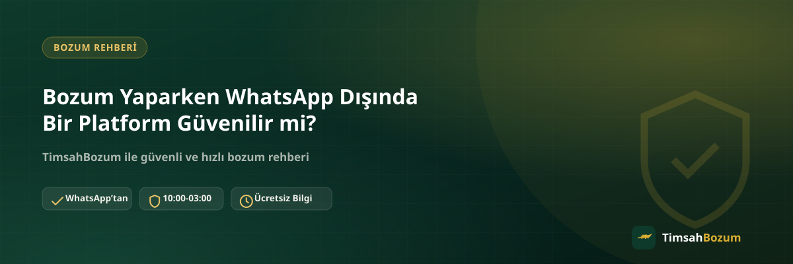

Bozum yaptırmak isteyen birçok kişi, işlem sırasında farklı bir numaradan veya farklı bir platformdan gelen bir mesajla karşılaşabiliyor. Bu durumda akla ilk gelen soru şu oluyor: bu mesaj gerçekten TimsahBozum'a mı ait, yoksa resmi hat dışında bir yerden mi geliyor? Bu yazıda WhatsApp dışındaki bir teklifin neden riskli olduğunu, resmi hattı nasıl doğrulayacağını ve şüpheli bir durumla karşılaştığında ne yapman gerektiğini anlatıyoruz.
Bozum İşlemleri Neden Tek Bir Hat Üzerinden Yürür?
TimsahBozum'da tüm işlemler tek ve sabit bir WhatsApp hattı (+90 543 887 21 71) üzerinden yürütülür. Bunun nedeni basit: tek bir kanal, işlemin kaydının tutulmasını ve sürecin takip edilebilir olmasını sağlar. Farklı numaralardan veya farklı platformlardan gelen taleplerin resmi süreçle hiçbir bağlantısı yoktur, bu yüzden bilgi paylaşımı öncesinde kanalın doğruluğundan emin olmak işlemin güvenliği açısından en önemli adımdır.
WhatsApp Dışındaki Bir Mesaj Neden Riskli Sayılır?
Resmi hat dışında bir numaradan "bozum yapıyoruz" diyen bir mesaj, gerçek işlem sürecinin bir parçası değildir. Böyle bir mesaja kod veya bakiye bilgini paylaşman durumunda bu bilgi, TimsahBozum'un bilgisi ve sorumluluğu dışında bir üçüncü tarafa ulaşmış olur. Bu yüzden mesajın kimden geldiğini teyit etmeden herhangi bir bilgi paylaşmamak en güvenli yaklaşımdır.
Resmi Numarayı Nasıl Doğrularsın?
Resmi numaramız sitemizin her sayfasında, iletişim bilgilerinde ve WhatsApp buton linklerinde aynı şekilde görünür: +90 543 887 21 71. Sana ulaşan bir mesajın bu numaradan gelip gelmediğini kontrol etmek, en basit ve en hızlı doğrulama yöntemidir. Numara farklıysa, bilgi paylaşmadan önce resmi hattan durumu sorman gerekir.
Instagram DM veya Farklı Bir Numaradan Gelen Teklif Ne Anlama Gelir?
TimsahBozum işlemleri yalnızca WhatsApp hattı üzerinden yürütülür; Instagram mesajı, farklı bir telefon numarası veya başka bir sosyal medya kanalı üzerinden resmi bir işlem yürütülmez. Böyle bir kanaldan "hesabımız değişti", "yeni numaramız bu" gibi bir mesaj gelirse, bilgi paylaşmadan önce mutlaka sitedeki resmi numaradan teyit almalısın.
Sahte Hesapları Nasıl Ayırt Edersin?
Marka adını taşıyan ama resmi numaradan farklı bir hesap, logoyu veya profil fotoğrafını kopyalamış olsa bile resmi değildir. Bir hesabın gerçekten TimsahBozum'a ait olup olmadığını anlamanın tek güvenilir yolu, iletişim bilgilerini sitedeki resmi numarayla karşılaştırmaktır. Acele ettirici bir dil kullanan, "hemen şimdi paylaş" diyen veya normalin dışında bir işlem talep eden mesajlara karşı temkinli olmak faydalı bir alışkanlıktır.
Arama Motorunda veya Forumda Karşına Çıkan Bir Link Güvenilir mi?
Arama motorunda "bozum" veya "mobil ödeme bozdurma" yazdığında karşına marka adını kullanan farklı siteler veya forum ilanları çıkabilir. Bu sonuçların TimsahBozum ile bir ilgisi olup olmadığını anlamanın yolu yine aynı: iletişim bilgilerini sitemizdeki resmi numarayla karşılaştırmak. Sitemizin adresi dışında bir alan adından veya farklı bir iletişim numarası gösteren bir sayfadan gelen bir teklife bilgi paylaşmadan önce mutlaka resmi hattan teyit almalısın.
SMS Doğrulama Kodu İsteyen Kişilere Neden Dikkat Etmelisin?
Bozum süreci, hattına gelen bir SMS doğrulama kodunu senden asla istemez. Böyle bir talep gelirse bu, bozum işlemiyle hiçbir ilgisi olmayan ve hesabına veya hattına erişim sağlamayı amaçlayan bir dolandırıcılık girişimi olabilir. Bu tür bir talep aldığında işlemi hemen durdurup kodu kimseyle paylaşmaman gerekir.
Resmi Numarayı Kayıtlı Tutmak Ne İşe Yarar?
Resmi WhatsApp numarasını rehberine kaydetmen, ileride sana ulaşan bir mesajın gerçekten bu numaradan gelip gelmediğini bir bakışta ayırt etmeni kolaylaştırır. Böylece benzer bir isimle veya benzer bir profil fotoğrafıyla seni yanıltmaya çalışan bir hesap, WhatsApp'ta "bilinmeyen numara" olarak görünür ve fark etmen daha kolay olur. Bu basit alışkanlık, özellikle daha önce bozum yaptırmış ve tekrar işlem yapacak kişiler için pratik bir güvenlik önlemidir.
Yanlışlıkla Bilgi Paylaşırsan Ne Yapmalısın?
Kod veya bakiye bilgini resmi olmayan bir hatta paylaştığını fark edersen, vakit kaybetmeden harekete geçmek önemlidir. Kod tabanlı bir hizmetse (Razer Gold, iTunes gibi) ilgili platformun kendi güvenlik adımlarını uygulaman, bakiye tabanlı bir hizmetse hesabının güvenliğini gözden geçirmen faydalı olur. Ardından durumu resmi WhatsApp hattımıza bildirmen, benzer bir girişimin başkalarını da etkilemesini önlemeye yardımcı olabilir.
Resmi Süreçte Üyelik veya Form İstenir mi?
Hayır. Resmi bozum sürecinde üyelik, form doldurma, kimlik belgesi veya hesap şifresi istenmez. Tek ihtiyacın kod bilgin ya da güncel bakiyeni gösteren bir ekran görüntüsü ve resmi WhatsApp hattı üzerinden iletişim. Senden bunların dışında bir belge veya bilgi isteyen bir kanal, resmi sürecin bir parçası değildir.
Kısacası
Bozum işlemi yaparken en önemli güvenlik adımı, mesajlaştığın hattın gerçekten resmi olup olmadığını teyit etmek. WhatsApp dışında bir platformdan veya farklı bir numaradan gelen bir teklife bilgi paylaşmadan önce mutlaka resmi numarayla (+90 543 887 21 71) karşılaştırma yap; SMS doğrulama kodu isteyen hiçbir talebe yanıt verme. Şüphe duyduğun bir durum olursa, doğrudan resmi hattımızdan bize yazarak teyit alabilirsin.
İlgili Yazılar
- Mobil Ödeme ve Bozum Dolandırıcılığından Nasıl Korunursun
- Bozum İşlemi Yaparken Nelere Dikkat Etmeli
- SMS Bozum Nedir? TimsahBozum'da SMS ile İşlem Yapılır mı?
Bir mesajın resmi olup olmadığından emin değilsen, bilgi paylaşmadan önce WhatsApp hattımıza yazarak teyit alabilirsin.